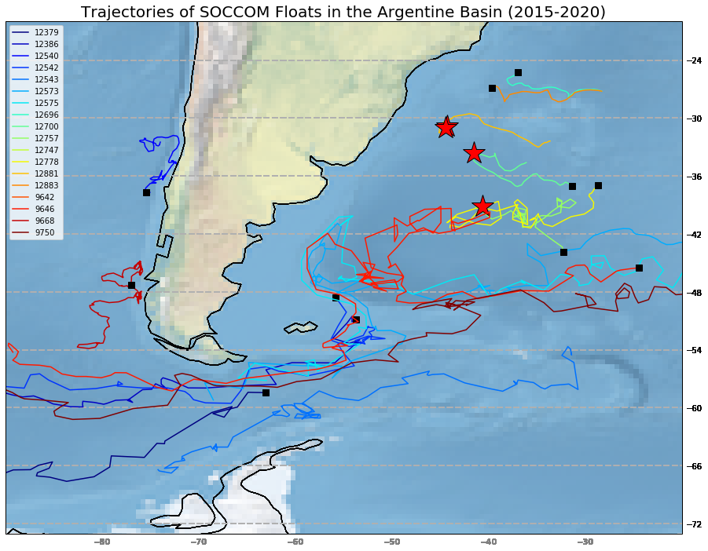

I am an undergraduate Oceanic and Atmospheric Science (OAS) student at Scripps Institution of Oceanography (SIO) working as a research assistant to Lynne Talley and also writing a research paper under her supervision. My research is centered around using Argo floats to examine aspects of the Argentine Basin and Malvinas-Brazil Confluence. My current paper explores circulation of Pacific Deep Water into the Argentine Basin and my upcoming paper will revolve around how the Malvinas-Brazil Confluence affects CO2 uptake and outgassing in the region.